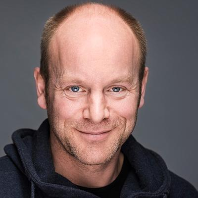
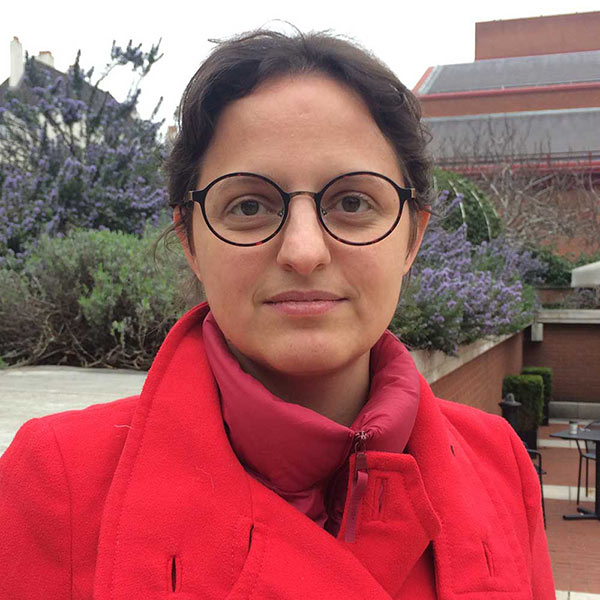
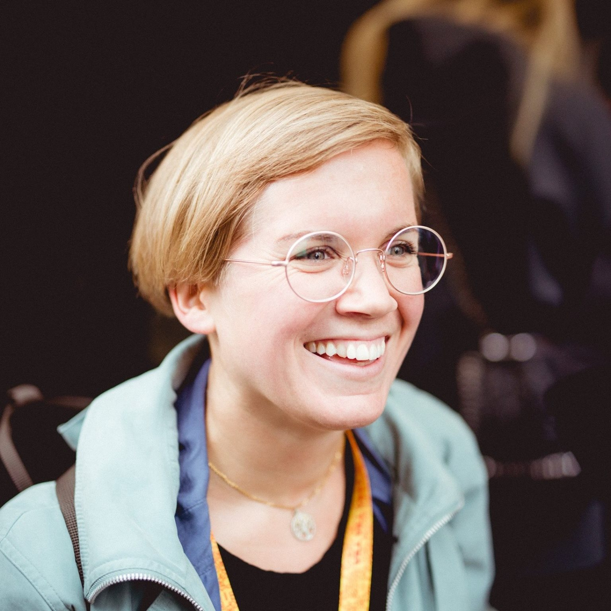
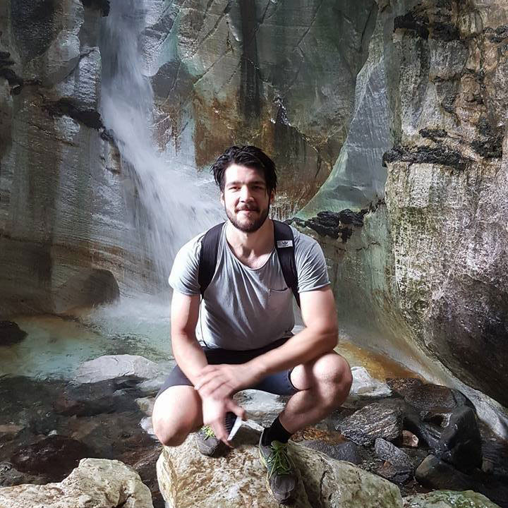
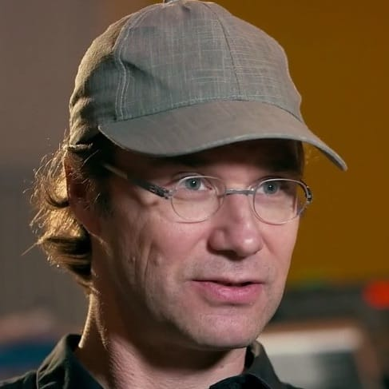
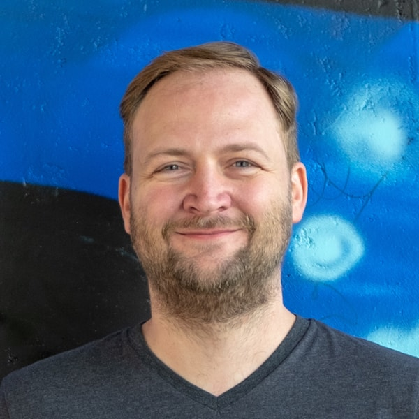
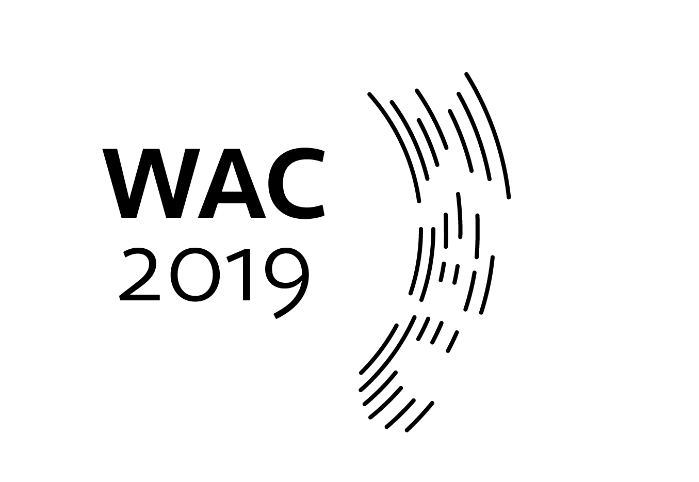

Info - Web Audio Conference 2019
About
Conference Committee
Acknowledgements
For additional information about acknowledgements, visit Full List of Acknowledgements in PDF format. Thank you everybody for all your help!
Conference Chairs |
|
|---|---|

|
Anna Xambó (Music Technology, NTNU) |
| Sara Martin (Electronic Systems, NTNU) | |
Publicity Chair |
|
| Letizia Jaccheri (Computer Science, NTNU) | |
Music/Artwork Chairs |
|
|  | Øyvind Brandtsegg (Music Technology, NTNU) |
|  | Ariane Stolfi (Federal University of South Bahia, Brazil) |
Poster/Demo Chairs |
|

|
Andreas Bergsland (Music Technology, NTNU) |
| Charles Martin (Computer Science, University of Oslo) | |
Diversity Chair |
|
|  | Miranda Moen (Interdisciplinary Studies of Culture, NTNU) |
Social Chairs |
|
| Alessia Milo (C4DM, Queen Mary University of London) | |
| Eigil Aandahl (Music Technology, NTNU) | |
Workshop Chairs |
|
| Eigil Aandahl (Music Technology, NTNU) | |
|  | Jørgen Nygård Varpe (Music Technology, NTNU) |
Online Publications Chairs |
|
| Sigurd Saue (Music Technology, NTNU) | |
| Gerard Roma (Department of Music, University of Huddersfield) | |
Logo Designer |
|
| Robin Mientjes (KOSO, Oslo) | |
Web Editor |
|
| Åshild Berg-Tesdal (Faculty of Humanities, NTNU) | |
Financial Officer |
|
| Rune Åge Frantzen (Faculty of Humanities, NTNU) | |
Administration Executives |
|
| Cecilie Heimdal (Faculty of Humanities, NTNU) | |
| Inna Aalmo (Department of Music, NTNU) | |
| Ellen Karlsen Holmås (Department of Music, NTNU) | |
| Hanne Formo (Department of Music, NTNU) | |
Consultants |
|
|  | Norbert Schnell (Hochschule Furtwangen University, Germany) |
|  | Christoph Guttandin (Media Codings, Germany) |
| György Fazekas (C4DM, Queen Mary University of London) | |
| Trond Engum (Music Technology, NTNU) | |
| Thomas Henriksen (Music Technology, NTNU) | |
| Robin Støckert (Mathematical Sciences, NTNU) | |

|
Frederic Marx (Ableton, Germany) |
| Jan Monschke (SoundCloud, Germany) | |
| Jack Armitage (C4DM, Queen Mary University of London) | |
Program Committee
Contact
General inquiries : contact@wac2019.ntnu.no
Paper submissions : papers@wac2019.ntnu.no
Music/Artwork submissions : music@wac2019.ntnu.no
Poster/Demo submissions : demos@wac2019.ntnu.no
Workshop submissions : workshops@wac2019.ntnu.no
Diversity inquiries : diversity@wac2019.ntnu.no
Sponsorship information : sponsor@wac2019.ntnu.no
Social events, accommodation and travel information : social@wac2019.ntnu.no
Logo
The WAC 2019 logo has been designed by Robin Mientjes (KOSO, Oslo).
The logo plays with the water and the sound, but it also communicates that we need to broadcast loudly, as broadly as possible. Below you can find three versions, from a very light version, to a more stern look, to ripples expanding. This last version can work not just as a logo, but also as ripples, on their own, overlaid on photos, as a background theme for presentations, and so on.
We recommend to use the Seravek font family. Alternatively, Work Sans can be used too.

{kind=link}
{kind=link}

{kind=link}
{kind=link}

{kind=link}

[ PNG ]
{kind=link}
Silver Sponsors


Diversity Sponsors


Bronze Sponsors


In collaboration with
|
|
|
|
|
|
|
|
|